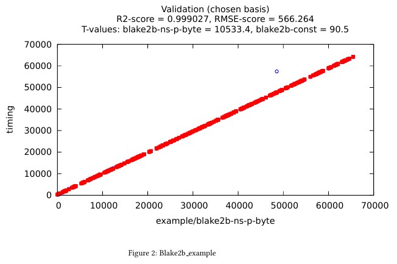

Snoop usage tutorial#
We present a typical benchmark workflow using octez-snoop.
We’ll consider the case of the blake2b hashing function, which
is used among other things to hash blocks, operations and contexts:
Tezos_crypto.Blake2B.hash_bytes : ?key:bytes -> bytes list -> Tezos_crypto.Blake2B.t
At the time of writing, this function is a thin wrapper which
concatenates the list of bytes and passes it to the blake2b
implementation provided by HACL*.
Step 1: Defining the benchmark#
Benchmarks correspond to OCaml modules implementing the Benchmark.S signature.
These must then be registered via the Registration.register function.
Of course, for this registration to happen, the file containing the benchmark
and the call to Registration.register should be linked with octez-snoop.
See Architecture of octez-snoop for complementary details.
We’ll define the benchmark module chunk by chunk and describe each part. For a starter, names are associated to various entities, and we use namespaces to help organize them.
open Tezos_benchmark
let ns = Namespace.(make root "example")
Benchmarks are referenced by name. The info field is a brief
description of the benchmark. module_filename will help users finding where
the benchmark is implemented simply using the command line interface. If we need to generate OCaml code to a
specific location, we can set it with the generated_code_destination field.
Finally, there’s also a system of tags that allows listing benchmarks by
kind.
module Blake2b_bench : Benchmark.S = struct
let name = ns "Blake2b_example"
let info = "Illustrating tezos-benchmark by benchmarking blake2b"
let module_filename = __FILE__
let generated_code_destination = None
let tags = ["example"]
Typically, a benchmark will depend on a set of parameters for the samplers which
generate input data to the function being benchmarked. These parameters
correspond to the type config. A default_config is provided, which can
be overridden by specifying a well-formatted JSON file. Reading and writing this
file is made possible by defining a config_encoding using the
data-encoding library.
type config = {max_bytes : int}
let default_config = {max_bytes = 1 lsl 16}
let config_encoding =
let open Data_encoding in
conv
(fun {max_bytes} -> max_bytes)
(fun max_bytes -> {max_bytes})
(obj1 (req "max_bytes" int31))
Benchmarking involves measuring the execution time of some piece of code and
using the recorded execution time to fit a model. As explained in
Architecture of octez-snoop, a model is in fact a function of three parameters: a
workload, the vector of free parameters to be fitted, and a name for future
reference. The workload corresponds to the information on the input of the
function being benchmarked required to predict its execution time. Typically, it
corresponds to some notion of “size” of the input. In order to be saved to disk,
we must define a workload_encoding as well. The workload type is abstract
seen from the outside of the module, however, for plotting purposes, it is necessary
to exhibit a vector-like structure on these workloads. The workload_to_vector
function maps workloads to sparse vectors. If one is not interested in plotting,
this function can be made to always return Sparse_vec.String.zero.
type workload = {nbytes : int}
let workload_encoding =
let open Data_encoding in
conv
(fun {nbytes} -> nbytes)
(fun nbytes -> {nbytes})
(obj1 (req "nbytes" int31))
let workload_to_vector {nbytes} =
Sparse_vec.String.of_list [("nbytes", float_of_int nbytes)]
We expect the execution time of Blake2b.hash_bytes to be proportional
to the number of bytes being hashed, with possibly a small constant-time overhead.
Hence, we pick an affine model. The affine model is generic, of the form
\(\text{affine}(n) = \theta_0 + \theta_1 \times n\) with \(\theta_i\) the free
parameters. One must explain how to convert the workload to the argument n.
This is the purpose of the conv parameter.
let models =
[ ( "blake2b",
Model.make
~conv:(fun {nbytes} -> (nbytes, ()))
~model:
(Model.affine
~name
~intercept:(Free_variable.of_namespace (ns "blake2b_const"))
~coeff:(Free_variable.of_namespace (ns "blake2b_ns_p_byte"))) ) ]
Finally, we can define the actual benchmark. The function to be defined
is create_benchmarks, which expects to be given an rng_state,
a bench_num and a config and returns a list of suspensions, each
suspension yielding a benchmark when evaluated.
One might wonder why this particular signature has been chosen, instead of returning directly a list of benchmarks, or simply requiring a benchmark generator to be defined. The reasons for this are:
the current signature allows for setup code to be shared by all benchmarks being generated (not the case here);
returning a list of suspensions allows to delay the sampling process and the memory allocation associated to benchmark generation until actually needed, hence preventing memory leaks.
The auxiliary function blake2b_benchmark is in charge of
preparing a closure, corresponding to a call to Blake2b.hash_bytes
applied to a random bytes, and the associated workload, containing the
size of the random bytes. We want benchmarks to be easily replayable
given a seed, hence the closure-generation function is parameterized with
an explicit rng_state of type Random.State.t.
let blake2b_benchmark rng_state config () =
let nbytes =
Base_samplers.sample_in_interval
rng_state
~range:{min = 1; max = config.max_bytes}
in
let bytes = Base_samplers.uniform_bytes rng_state ~nbytes in
let workload = {nbytes} in
(* The closure here is the piece of code to be benchmarked. *)
let closure () = ignore (Tezos_crypto.Blake2B.hash_bytes [bytes]) in
Generator.Plain {workload; closure}
let create_benchmarks ~rng_state ~bench_num config =
List.repeat bench_num (blake2b_benchmark rng_state config)
end (* module Blake2b_bench *)
This concludes the definition of the benchmark. Let’s register it:
let () = Registration.register (module Blake2b_bench)
Step 2: Running the benchmark, inferring parameters, and generating code#
Now, we are ready to run our benchmark. All we need is the full name of the
benchmark, which involves namespaces. Fortunately, octez-snoop enjoys a few
commands to help us if we are not sure what the final name of the benchmark is.
octez-snoop list all benchmarks | grep blake2b
Which prints:
example/Blake2b_example: Illustrating tezos-benchmark by benchmarking blake2b
We can also query more information about the benchmark, resulting from the registration process.
octez-snoop display info for benchmark example/Blake2b_example
And here is what we get.
Name:
example/Blake2b_example
Filename:
src/lib_benchmark/example/blake2b.ml
Generated code destination:
Destination not specified
Info:
Illustrating tezos-benchmark by benchmarking blake2b
Tags:
example
Models:
blake2b:
Aggregated model containing the following abstract models:
example/Blake2b_example
builtin/timer_model
Models and other entities that Snoop manipulates can be displayed, and the Snoop manual has a dedicated section that we can explore.
Also, we need to install some Python libraries before going further.
pip install scikit-learn statsmodels
Now we can proceed with our initial goal, and ask Snoop to perform some
measurements and generate OCaml code that reflects the gas cost of running
blake2b depending on its input.
octez-snoop generate code for benchmarks example/Blake2b_example --out-dir /tmp/snoop_results
The tool is quite verbose, but we will not detail what it is telling us here; this is the purpose of the Snoop in-depth example section of the documentation. Two lines are worth noticing though.
Adding solution example/blake2b_ns_p_byte := 0.976187
Adding solution example/blake2b_const := 295.080202
These are the values that octez-snoop has inferred for the parameters of the
model we declared, and based on the measurements it performed. The obtained
values are highly dependent on the architecture of the computer and the
processes running in parallel while measuring the execution time.
What Snoop did was to:
run the benchmark on a certain number of random inputs, and a certain number of times for each input;
infer values for the model parameters so that the model fits as closely as possible the measures obtained at the previous step;
generate an OCaml function representing the model, where rational values are approximated using integers manipulation;
plot the model and the measurements together in a report.
Step 3: checking the generated files#
octez-snoop created several files in /tmp/snoop_results (the argument of
the out-dir option). Let’s have a look at two of them.
blake2b.ml contains the gas cost function: it estimates the computational
time of running blake2b on an input of the given size.
(* Do not edit this file manually.
This file was automatically generated from the models registered at
src/<protocol>/lib_benchmarks_proto/interpreter_model.ml.
If you wish to update a function in this file,
a. update the corresponding model, or
b. define a new function in michelson_v1_gas_costs.ml, potentially referencing this one. *)
[@@@warning "-33"]
module S = Saturation_repr
(* Inference model name: blake2b *)
(* model example/Blake2b_example *)
(* fun size -> (295.080202248 + (0.976187336999 * size)) *)
let cost_Blake2b_example size =
let open S.Syntax in
let size = S.safe_int size in
let v0 = size in
(S.safe_int 300) +
((((v0 lsr 1) + (v0 lsr 2)) + (v0 lsr 3)) + (v0 lsr 4))
The rational values of the gas parameters have been rounded using integer
arithmetics. The file can be copied and pasted in the protocol, and the cost
function can be called at a specific location so that we can account for gas
when running blake2b.
Another file of interest is blake2b.tex that we can convert to PDF format.
pdflatex blake2b.tex
The document shows some plots, like this one:
In abscissa, we find the size of inputs randomly chosen during the measurements,
and in ordinate is the computation time.
The blue circles are the values measured by Snoop when running blake2b, and
the red squares are the values obtained for the declared model with the
parameters inferred by Snoop. This allows to evaluate how good the model is:
the more the two overlap, the more precise we are.
Step 4: options#
Some of our benchmarks can take a long time to run. octez-snoop offers
options to vary the number of random values or the number of times they are
measured, using options --nsamples and --bench-num (see
the manual). The default values are 300 random
values and 100 measurements for each. We can specify lower numbers to reduce
benchmark time, but it will also degrade the precision of the results.
Another option of particular interest is --plot. It can be used to
automatically open windows at the end of the whole process. They will show the
same plots as in the report generated at the previous step, but we can interact
with the plots, which is very convenient when they are multi-dimensional (i.e.
when the complexity model relies on more parameters).
Using Snoop in the development cycle#
So when are we supposed to use Snoop? There are two cases.
Developing a new feature in the protocol#
When a feature is added in the protocol, it must account for the gas that bakers and attesters will spend by running the feature. Here is a typical workflow:
developers implement the feature;
they also implement the corresponding benchmarks (usually in
src/proto_alpha/lib_benchmarks_proto);they generate the cost function from the benchmarks using Snoop;
they copy the resulting, generated code to the appropriate location in the protocol (potentially a new file);
they create a merge request;
when the request is merged, the gas team will automatically see new benchmark results. Then, they will update the cost function with the results obtained from running the benchmarks on the reference machine for gas.
Updating dependencies or code#
When developers update a library that Tezos depends on, or modify a protocol feature in such a way that gas may be impacted, they should check so by running Snoop before and after the modifications.
The usual steps would be to:
use the
list all benchmarksanddisplay info for benchmarkcommands to find the concerned benchmarks;run the benchmark and update the resulting cost function with the code generated by Snoop;
open a merge request and let the gas team know that gas has changed;
when the request is merged, the gas team will update the cost function with the results obtained from running the benchmarks on the reference machine for gas.